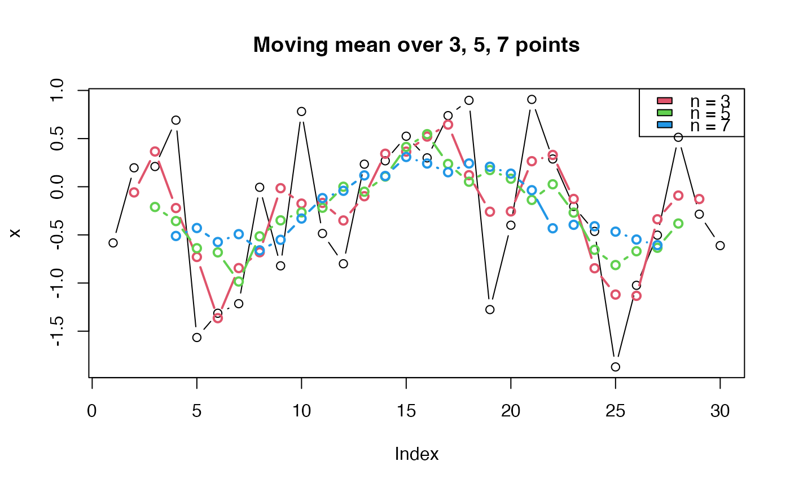

Calculate moving mean of n values "around" values
hsMovingMean(x, n, na.rm = FALSE)
| x | vector of values of which moving mean is to be calculated |
|---|---|
| n | number of values "around" the values in x, including the values in x, of which the mean is calculated. Only odd numbers 1, 3, 5, ... allowed. For each x[i] in x the moving mean is calculated by: (x[i-(n-1)/2] + ... + x[i-1] + x[i] + x[i+1] + ... + x[i+(n-1)/2]) / n |
| na.rm | logical. Should missing values (including NaN) be omitted from the calculations? |
Vector of moving means with the same number of values as there are in x. If na.rm is FALSE, the first (n-1)/2 values and the last (n-1)/2 values are NA since there are not enough values at the start and the end of the vector to calculate the mean.
x <- rnorm(30) plot(x, type = "b", main = "Moving mean over 3, 5, 7 points") times <- 2:4 for (i in times) { lines(hsMovingMean(x, n = 2*i - 1), col = i, type = "b", lwd = 2) } legend("topright", fill = times, legend = sprintf("n = %d", 2*times - 1)) 